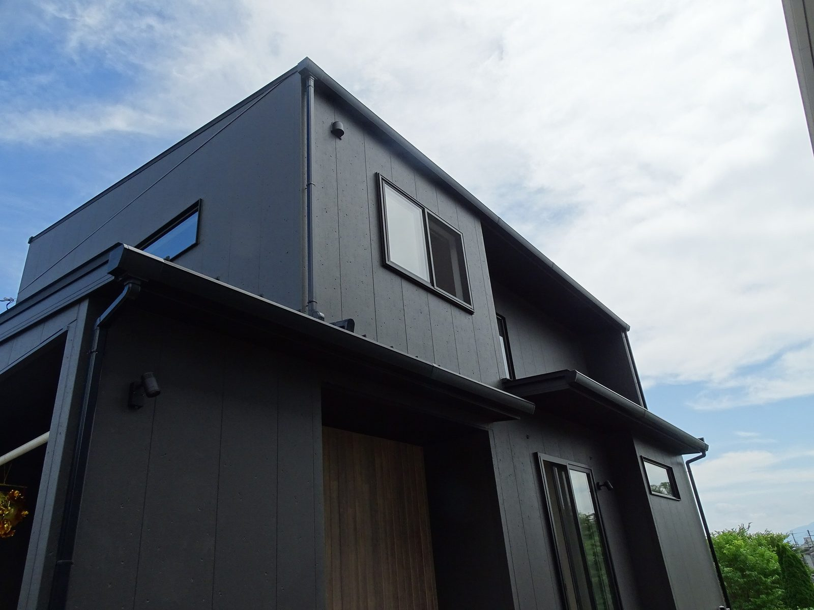

壁の少ない広いリビング。
2階が前に張り出したかたち。
かっこいい間取りほど、図面では見えない負担を抱えていることがあります。
大工歴43年の社長が、模型を持ち出して説明しました。
キーワードは直下率という言葉です。
直下率とは、柱がそろっている割合
2階建ての家には、1階にも2階にも柱があります。
2階の柱の真下に、1階の柱がある。
これがそろっている状態を、直下率100％と呼びます。
動画では、社長がわざと柱をずらした模型を見せています。
2階の柱を受ける柱が、1階にない。
見ただけで、バランスが悪いと分かります。
2階と屋根の重さが、1階の柱をまっすぐ通って基礎まで届きます。力の伝わる道が短く、素直です。
2階の重さを、いったん梁が横から受け止めることになります。梁にも金物にも、余分な力がかかります。
最近の間取りは、壁と廊下を減らして動きやすくする形が主流です。
1階に広いリビングを取り、2階には部屋をいくつも並べる。
つまり支える柱が少ない1階の上に、柱の多い2階が乗ることになります。
屋根と2階を支えるのは1階です。
その1階の柱が少なくなるほど、地震のときに不利になります。
よくある形①2階が張り出した家
1階より2階が前に出ているかたちを、オーバーハングと呼びます。
下に駐車場や玄関を取れるので、狭い土地でよく使われます。
凹凸が出て、外観にも表情がつきます。
ただし、張り出した部分の下には支えがありません。
動画では模型を上から押して、どう変形するかを見せています。
てこの力がかかり、梁にも柱にも金物にも負担が集まります。
暮らしに関わる弱点もあります。
- 床が冷えやすい
張り出した部分の床下は外気です。1階の床の上とは条件が違い、断熱の施工も難しくなります - 揺れを感じることがある
出せば出すほど先端は動きます。前の道路の交通量が多いと、大きな車が通るたびに小さな揺れを感じます

柱がどこに立っているかは、住む人にも見えません。
だから、計算の中身を先に聞いておく必要があります。
よくある形②スキップフロアの家
1階の床と2階の床の間に、もう1枚の床をつくる。
1.5階と呼ばれる、あの空間です。
リビングから見上げたときの見え方が良く、人気があります。
構造から見ると、この形は複雑です。
中間の床を支えるために、1階と2階を支えている柱を、横から押す力が生まれます。
柱は本来、上からの重さに耐えるための材料です。
横から押される前提の柱は、木の組み方そのものが入り組みます。
社長は、建ててから2年から5年ではまだ分からないと言います。
そのあと、クロスの割れや床の沈みとして出てくることがある。
だからこそ、採用するなら計算で確かめておく必要があります。
諦めなくていい。計算で確かめればいい
ここまで読むと、好きな間取りを諦める話に見えるかもしれません。
そうではありません。
柱がずれるなら、その分を梁で受ける。
梁が折れないように、20cmの材料を27cmに、30cmにする。
下に基礎がなければ、基礎を足す。
こうして一本ずつ確かめていくのが許容応力度計算です。
もうひとつ、壁量計算というやり方もあります。
こちらは壁の量で建物の強さを見る方法です。
上からの重さがどう伝わるかまでは、細かく追いません。
どちらの計算でも、耐震等級3と表示することはできます。
同じ「等級3」でも、確かめた中身が違うのです。
ただし義務になったのは提出で、計算のやり方までは決められていません。
だから、聞かないと分かりません。
住宅会社への、たった一つの質問
動画の中で、社長がいちばん伝えたかったのはこの一言です。
この場ですぐ答えが返ってこないときは、そこから先を慎重に進めてください。
もうひとつ、社長が心配していたことがあります。
近ごろは、送った図面を数千円で描き直してくれるサービスがあります。
平面の図では、たしかに広くて素敵に見える。
ですが模型に起こすと、柱の位置がまるで違うことがあります。
その間取りをそのまま持ち込んで「これでできますか」と聞くのは、危ないやり方です。
シバサンホームは、全棟で確かめています
当社は全棟、許容応力度計算による耐震等級3です。
間取りの自由度を下げないために、計算のほうを厚くしています。
まず命が守られること。
そのうえで、暮らしやすい間取りを考える。
この順番だけは、動かしません。
まとめ
- 直下率＝1階の柱の上に2階の柱がどれだけ乗っているか
- 広いリビングの上に部屋が並ぶ形は、支える柱が減りやすい
- 張り出した2階は、てこの力がかかり、床も冷えやすい
- スキップフロアは柱を横から押す力が生まれ、構造が入り組む
- 諦める必要はない。許容応力度計算で確かめればよい
- 聞くのは一言。「壁量計算ですか、許容応力度計算ですか」

奈良の工務店シバサンホームで、初めての家づくりに伴走しています。お金のことこそ正直に。モットーはスピード・誠実さ・楽しさ。